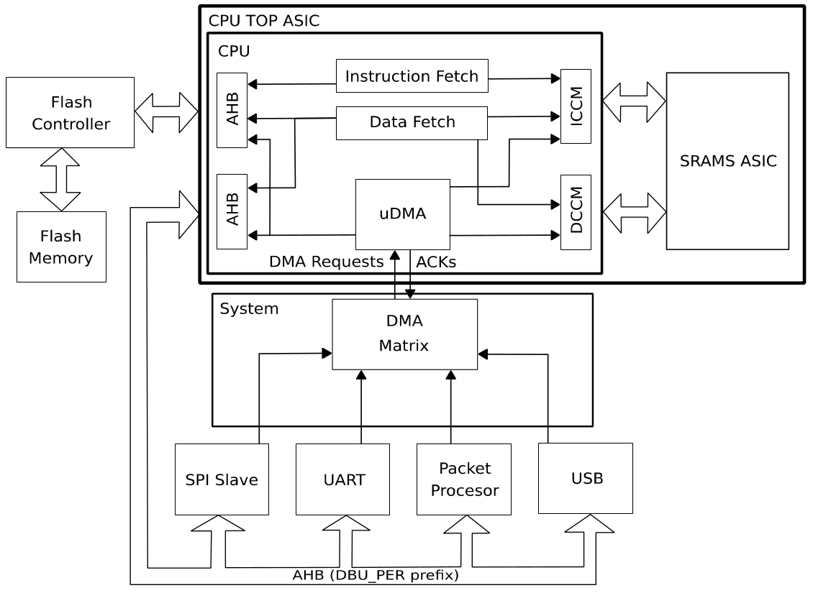

Overview
DMA engine is implemented in EM9305 to offload ARC CPU from data transfer between peripherals, Flash and CCM memories.
DMA Configuration
The uDMA engine is generated with following configuration options:
8 DMA channels. Among the available DMA channels, one channel is reserved for user application
6 AUX Based DMA channels aimed to avoid latency caused by DMA descriptor loading.
2 RAM based DMA channel for copying bulk of data where one time latency of descriptor load is negligible.
Single Internal Interrupt (two Interrupt sources DMA Done, DMA Error on IRQ20 and IRQ21)
2 words FIFO depth. Allows 4 byte single and 8 byte burst data reads by DMA engine.
Integrated System memory Interface.
System Architecture
DMA for Peripherals
The DMA engine is connectable to following peripherals:
UART
SPI Slave
Packet processor
USB
ADC
I2S
Radio
Since there are more Requests than available DMA channels, there is an M:N mapping between requests from peripherals to DMA channel requests.
For additional information, please refer to DesignWare ARC EM Databook section microDMA Controller. This document is available with Synopsys Metaware Compiler installation.
EM9305 SDK
The EM9305 SDK provides built-in drivers with DMA support for UART and SPI Slave in addition to non-DMA based drivers.
The I2S driver as well as the Radio driver are available only in their DMA version.
Warning
Source and Destination shall be 32-bit aligned.
Memory Transfer Example
#include "dma.h"
// Block size of the transfers
#define BLOCKSIZE 700
// Buffers
typedef struct {
uint8_t src[BLOCKSIZE];
uint8_t dest[BLOCKSIZE];
} Buffer;
// Globals
static Buffer buff __attribute__((aligned(4)));
volatile uint8_t dma_failed_flag=0;
void DMA_chan0_Callback(DMA_Status_t status)
{
dma_failed_flag=0;
if(status == DMA_SUCCESS)
{
/*Reload DMA or do whatever you want*/
}
else
{
dma_failed_flag = 0x01;
}
}
void dma_example_function()
{
DMA_Enable(DMA_DISABLE);
DMA_EnableChannel(0, DMA_DISABLE);
for(uint32_t i=0;i<BLOCKSIZE;i++)
{
buff.src[i]=(BLOCKSIZE+i)&0xFF;
buff.dest[i]=0;
}
// Init the DMA configuration structure
DMA_Config_t config = {
.sourceAddr = (uint32_t)buff.src+BLOCKSIZE-1,
.destinationAddr = (uint32_t)buff.dest+BLOCKSIZE-1,
.linkedListAddr = 0x00,
.ctrl.bits = {
.operation = DMA_SINGLE_TRANSFER,
.requestType = DMA_AUTO_REQUEST,
.srcDestType = DMA_MEM_TO_MEM,
.dataWidth = DMA_DW_BYTE_INC_BYTE,
.blockSize = BLOCKSIZE-1,
.arbitration = 0x00,
.enableInterrupt = true,
.adressingMode = DMA_INC,
},
};
DMA_Enable(DMA_ENABLE);
uint8_t dma_channel = 0;
// Set channel config
DMA_SetConfiguration(dma_channel, &config, DMA_chan0_Callback);
// Enable the channel
DMA_EnableChannel(dma_channel, DMA_ENABLE);
// init source and destination
for(uint32_t i=0;i<BLOCKSIZE;i++)
{
buff.src[i]=(BLOCKSIZE+i)&0xFF;
buff.dest[i]=0;
}
// initiate transfer
if(DMA_InitiateTransfer(dma_channel) != DMA_SUCCESS)
{
/*Error condition*/
}
// Wait for DMA transfer is completed
while(DMA_GetBusyStatus(dma_channel) == DMA_BUSY)
{
COMMON_WaitUs(100);
}
if(DMA_GetTransferStatus(dma_channel) != DMA_CHANNEL_COMPLETE)
{
/*Error condition*/
}
if(dma_failed_flag == 0x01)
{
/*Error condition*/
}
for(uint32_t i=0;i<20;i++)
{
if(buff.dest[i] != buff.src[i])
{
/*Error condition*/
}
}
}